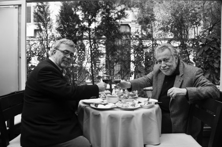

“Yılmaz Güney’e, artist olsun diye beş takım elbise diktirdim”
Yemekle aranız nasıl?
Rahmetli annemin yemeklerinin dışında özel olarak beğendiğim şeyler enderdir. Çocukluğumuzda alıştığımız yemekler, Osmaniye geleneği içinde Çukurova yemekleri, Antep falan hepsi birbirine yakındır; dolmalar, içliköfteler, analı-kızlılar, etli kömbeler... Müthiş bir mutfağa sahiptir bizim oralar. İnsan bu yemeklerle büyüyünce diğer yemekleri kolay kolay beğenemiyor.
Çocukluğunuzda mutfağın hâkimi kimdi?
Doğal olarak annemdi. Babam hiçbir şeye karışmazdı, ama annem çok iyi yemek yapardı gerçekten. Ben sonradan şunu fark ettim, hepimizin annesi iyi yemek yapıyor galiba. Herkes “Ahh annemin yemeği” der. Ablam da annemin yemeklerini yapardı, gerçekten de çok lezzetli yapardı ama nedense annemin yemeklerinin yerini tutmazdı. Sonraki kuşaklarda aynı lezzeti bulamıyorum. Kime sorsanız herkes en lezzetli yemeği kendi annesinin pişirdiğini söyleyecektir.
Kebap alışkanlığınız yok muydu, yapmaz mıydınız?
Osmaniye’de kebap alışkanlığı pek yoktur. Et alışkanlığı vardı. Şöyle bir durum vardı, çocukluğumda savaş döneminin kıtlıklarını yaşıyorduk, et falan bulmak çok zordu. Babam nalbantlık yapıyordu, evde tavuk falan varsa o kesilirdi, et alışkanlığı pek yoktu. O et kıtlığında kebap, ocakbaşı gibi şeyler aklımızdan bile geçmezdi. Kebap alışkanlığı uzun yıllar sonra ortaya çıkan bir şey.
Çocukken nasıl beslenirdiniz?
Çocukluğum savaş yıllarına rast geldi. Karartmaların olduğu, şekerin bulunmadığı dönemlerdi. Biz sabahleyin kahvaltı niyetine bir bardak pekmez içerdik. Antep’ten, Maraş’tan kervanlar gelirdi, eşeklerin üzerinde pekmez tulumları yüklü olurdu. Ev ev dolaşıp satarlardı. Sabahleyin okula gitmeden bu pekmezlerden bir bardak içer öyle okula giderdik. Yine sabahları mahluta çorbası ve tırşik çorbası yapılırdı. Tırşik, dere kenarlarında da olan, ısırgan gibi bir ottur; iyi kaynatılması lazım, yoksa ağzınızı dağlar. Öğlenleri bulgur pilavı ile hoşaf içerdik. Osmaniye’de portakal bahçeleri çok vardır, ya kendi evimizden yoksa komşuların bahçesindeki portakal ağaçlarından portakal çalardık. Topladığımız portakalları gömleklerimizin içine saklar sinemaya giderdik. Tabii cebimizde bilet paramız olmazdı. Kapıda İsmail Ağa dururdu. Film başladıktan sonra sıraya girer, çaldığımız portakalları bilet parası niyetine İsmail Ağa’nın küfesine boşaltırdık.
Sizin mutfakla aranız nasıl?
Ben mutfak işinden hiç anlamam, ama güzel yemeği iştahla yemesini iyi bilirim. Her şeye rağmen damağım gelişmiştir, iyi yemeği kötüsünden ayırt ederim. İstanbul mutfağında sebzelere alışmakta çok zorlandım. Çocukluğumda hiç tatmadığım sebzelerle burada tanıştım. Birçoğunu halen yemem; mesela kerevizi, karnabaharı ağzıma sürmem.
Gazetecilik, sinema yazarlığı, bar işletmeciliği bütün bunların altından nasıl kalkıyorsunuz?
İstanbul zor bir şehir. Bu kente 16 yaşında kaçıp gelmişim. Bir taraftan okumuş bir taraftan çalışmışım. Çocukluğumda şiir falan yazarken, edebiyat çevresine girmişim. Orhan Kemal, Yaşar Kemal’le tanışmışım. Yani aklına hangi yazar, şair geliyorsa hepsi arkadaşım olmuş. Attilâ İlhan falan ağabeyim kadar yakınım olmuştur. Hayat biraz da tesadüfler insan hayatını yönlendiriyor. Yılmaz Güney de arkadaşımdı. Demirtaş Ceyhun’la hikâyeler yazıyordu. Bir duruşmaya gitmediği için altı ay sürgün, bir sene hapis yedi. Hapishaneye daktilo alıp gönderdim, Boynu Bükük Öldüler’i o daktiloyla yazmıştı. Bir gün yanıma geldi, “Ben artist olacağım” dedi. İtiraz ettim ama dinlemedi, “Bana beş takım elbise diktirin, gerisine karışmayın, ben parasını taksitle ödeyeceğim” dedi. Giyindi, kuşandı İstiklal Caddesi’ne çıktı. Ferit Ceylan, Adana’da çekilecek filmde Yılmaz’ı da oynattı. Ferit alkolik olduğu için, Yılmaz filmi hem çekti hem oynadı, yarıdan fazlasını Yılmaz çekti. İşte o film Yılmaz’ı birdenbire ortaya çıkardı.
Sizin yayıncılığınız da vardı?
Evet, beş yıla yakın yayınevi müdürlüğü yaptım. Bir gün Akşam gazetesinin ilan müdürü olan arkadaşım, “Bütün Babıâli seni çok seviyor. Taksitle kitap alalım, sonra taksitle kitap satalım” dedi. Biz işe başladık. Çok küçük satışlar düşünürken, birden satışlar patladı. Meğer bilmeden altın yumurtlayan tavuğun üstüne oturmuşuz. Hemen Ankara’da bir şube açtık; müthiş eğleniyoruz, bir sene içinde müthiş bir zenginlik ve batış yaşadık. Çünkü yaz aylarını hiç hesaba katmamıştık. Yaz olunca Ankara boşalıyor, kimse borcunu ödemiyordu. Çok kazandık, çabuk battık anlayacağın.
Bar işi nereden çıktı?
Kitap işinden sonra, İsviçre’ye gittim geldim, fotoromanlar çektim ve film işine başladım. Film işi beni sardı ve “Sinemacılık yapacağım” dedim. Birkaç arkadaşımla birlikte Ekta Film diye bir şirket kurduk, fakat kimse beş kuruş para vermedi. Ekta Film’de ben bir tane film yaptım, sonra işi ciddiye aldım, sinemacılığa başladım ve en iyi filmleri yaptım. Bir kere Otobüs filminin Türkiye ortağıydım. Arkasından Türkan Şoray’lı bir film yaptım, onun arkasından Kurt Kızı diye bir film yaptım. Sonra Kemal Sunal’la Kapıcılar Kralı’nı, arkasından Selvi Boylum Al Yazmalım’ı çektim. Yine Kemal’le Köşeyi Dönen Adam’ı yaptım. 1978-79 yılında, “Ülkemi sinemacı olarak yurtdışında tanıtmam lazım, bu benim Atatürk’e olan borcum” dedim. Yurtdışındaki televizyonlar için “Anadolu Uygarlıkları” adı altında bir dizi yaptım. On bölüm falan çektim, fakat pazarlanamadı. Barın olduğu yer benim yazıhanemdi, yine kara kara ne yapacağımı düşünmeye başladım. Para yok, bir şeyler yapmam lazım. Elimde TRT için yaptığım bir filmin KDV’si vardı. Onu bir buçuk ay sonra geri yatırmam gerekiyordu. Fakat şeytan da dürttü bir taraftan. Özetle devlete ödeyeceğim KDV’yle ofisimi bara çevirdim. Dost ve arkadaş çevreme güveniyordum. Güvenim boşa çıkmadı, bar 25 yıldır kapısını kapatmadı.
Çiçek Bar’dan kimler geldi, kimler geçti?
Saymakla bitmez ki... Elia Kazan, Cengiz Aytmatov, Turgut Boralı, İsmet Ay, Aykut Oray, Kemal Sunal, Zeki Ökten, Demirtaş Ceyhun, Savaş Dinçel, Üstün Korugan, Yaman Okay, Ömer Uluç, Orhan Aksoy... Bunlar aklımda kalan rahmetliler. Bir de yaşayanlar var: Tarık Akan, Rutkay Aziz, Mücap Ofluoğlu, Bülent Kayabaş, Mustafa Alabora, ressam Alaattin Aksoy, Aydemir Akbaş, Şener Şen, Osman Şengezer, Nuri Dikeç; arada sırada Özdemir İnce, Sevda Ferdağ, Fatoş Güney, Şerif Sezer, eskiden Selim İleri, Türkan Şoray... Saymakla bitiremem. Yazarı, çizeri, sinemacısı, reklamcısı, gazetecisi, sporcusu, hâkimi, savcısı, doktoru, tüccarı, işadamı, politikacısı, tiyatrocusu. Bir zamanlar salonda ayakta duracak yer bile bulunmazdı.
Eski müşteriler artık fazla görünmüyorlar. Bir bölümünü diğer tarafa yolcu ettiniz, kalanlara ne oldu?
Şimdi bir kısmı evden çıkamıyor, bir kısmı çıkmıyor, bir kısmının ekonomik durumu bozuldu, bir taraftan içkilerin fiyatları attı. Her gün zam geliyor, kimse içmesin diye devlet böyle bir politika uyguluyor. Burada yirmi insan var özveriyle çalışan. Bir şekilde sürdürüyoruz. Bir zamanlar sadece tuvalette klasik müzik çalardı. Şimdi barı ayakta tutabilmek için canlı müzik de yapıyoruz. Bizim eski müşterilerimiz altı ile dokuz arası burada bulunuyor. Müzik olduğu akşamlar tamamen başka müşteri geliyor.
Akşamüstü barı alışkanlığı yavaş yavaş sona mı eriyor?
Sanki öyleymiş gibi gözüküyor. Meyhane alışkanlığından, bara dönüşümü biz yaşadık. Eskiden İstanbul’da bar yoktu. Bir Kulis vardı, Park Otel’in barı vardı. Sonra Divan’ın barı açıldı. Hilton’un barına fazla gidilmezdi. Kulis’ten ayrılanlar Papirüs’ü açtı. Arkasından Sanat Evi’nin barı devreye girdi. Maçka’da Zihni Bar açıldı. Şu anda Beyoğlu’nda en eski bar olarak biz kaldık. Çiçek Bar, Beyoğlu’na çok şey kattı. Entelektüellerin, siyasetçilerin, hukukçuların, sanatçıların, yazarların sığınağı oldu adeta.

Barda herkesin parsellenmiş bir yeri var, kimse kimsenin yerine oturmuyor...
Hakikaten yerler parsellenmiştir. Mesela gazeteci Nuri Dikeç’in bardaki taburesine hayatta kimse oturmaz. Turgut Boralı yıllarca aynı tabureye oturdu, o öldükten sonra yerine İsmet Ay geçti. Daha sonra oraya Mustafa Alabora oturmaya başladı. Bir köşede Yeşilçam masası vardır. Orada sadece sinemacılar oturur. Rahmetli Kemal Sunal, Zeki Ökten, Atıf Yılmaz, Orhan Aksoy o masanın müşterileriydi. Şimdi Rutkay Aziz, Tarık Akan, Şerif Gören, ressam Alaaddin Aksoy ve diğer sinemacılar oturur. Tiyatrocular daha çok barın içinde ve dışında yer alırlar. Aydemir Akbaş ile ortağım Azmi sporcuların masasını tercih ederler. Ben ise masadan masaya dolaşıp, kadeh kaldırırım.
Bir de özel günleriniz var...
Biz Atatürk’e, Cumhuriyet’in ilkelerine çok bağlı olduğumuz için, her yıl 29 Ekim’de ve 10 Kasım’da özel günler düzenliyoruz. O günlerde 1920’lerden itibaren basılmış gazeteleri, Atatürk’ün bilinmeyen fotoğraflarını sergiliyoruz. O tarihlerde yapılmış taş baskı afişleri asıyoruz. Bazen balo düzenliyoruz. Özel sergimiz 11 Kasım’a kadar devam ediyor. 10 Kasım’da özel leblebi fırınını kapının girişine koyuyoruz. Gelenler bir bardak leblebisini alıp içeriye giriyorlar. O gün ilk duble rakıdan para almıyoruz.
Barın mutfağı sağlam mı?
Çiçek Bar’ın mutfağı aslında çok güzel. Başında yirmi küsur yıldır çalışan bir Arnavut aşçı var. Ali Sirmen ve eşi sadece şnitzel yemek için buraya gelirler. Bizim pazı sarmamız da çok meşhurdur. Karıkoca gurme arkadaşlarım var. Gelecekleri zaman karısı telefon eder, “Akşam geliyoruz, benim için beş porsiyon, eşim için sekiz porsiyon pazı sarması ayırır mısınız?” der. Köftelerimiz harikadır. Bizde gerçekten köfte muhteşem yapılır, o lezzette köfteyi çok az yerde yiyebilirsiniz. Kuru fasulyemizin tadı da dillere destandır. Şener Şen geldiği zaman, önce kuru fasulyesini yer. Bezelye çorbamızı içmek için özel olarak gelenler vardır. Yani Çiçek Bar aynı zamanda çok lezzetli bir lokantadır.
Sokak yemekleriyle aranız nasıl?
Kokorece bayılırım. Çiçek Pazarı’nın içinden ne zaman geçsem hemen çeyrek ekmeğin içinde kokoreci ihmal etmem. Uzun yıllar maça giderken seyyar köfteciden köfte-ekmek yedim. Artık maça gitmediğim için köfte-ekmeği özlüyorum. Yıllarca gece eve gitmeden işkembeciye uğramayı ihmal etmedim. Tuzlama, damardan işkembe, bazen yarım baş. Artık pek gidemiyorum. Malum doktor yasakları. Sokak kebapçılarından az mı dürüm yemedim.
Hangi yörenin yemekleri ağzınızı sulandırır?
Antep yemekleri, kebapları, Çukurova’nın o muhteşem kebapları. Mardin’de Cercis Murat Konağı’nda yediğim yemeklerin tadı hâlâ damağımda. Kutsal lezzetlerdi onlar. Müthiş bir mutfaktı. Ben sadece oranın mutfağıyla bir ülkenin tanıtımının yapılabileceğine inanıyorum. Aslında yemekte bölgecilik yapmam. Hangi yemek lezzetliyse onu severek yerim. Bu kebap da, balık da, hamur işi de olabilir.
Dünya mutfağıyla aran nasıl?
İtalyan mutfağını çok seviyorum, o yüzden İtalya’ya çokça gidiyorum. İspanyol mutfağı da tam damağıma göre. Fransız mutfağını da inkâr edemem. Orada şık restoranlarda yediğim yemeklerin lezzetlerini unutamam. Bir kafede yediğim salyangozun tadı hâlâ damağımda, çok hoşuma gitmişti. Bir film festivali için gittiğim Korsika’da, Zeynep Oral öğle yemeğinde beni midye yemeye götürdü. Koca tencerenin içinde midye geldi önümüze. Tencere neredeyse asker karavanası kadar bir şeydi. İkimiz o koca tenceredeki o midyeleri bitirdik, bir de suyunu kaşıkladık. Böylesine lezzetli bir şey yediğimi hatırlamıyorum. Yurtdışında fırsat buldukça midye yerim. Türkiye’deki midyeler gözümü korkutuyor.
Kimlerle ve nerede yemek yemek hoşunuza gider?
Sevdiğim dostlarımla içki eşliğinde yemek yemeyi seviyorum. Özellikle akşam yemekleri benim için önemlidir. Sevdiğim insanlarla kadeh tokuşturarak yemek yemek bana çok keyif verir. Yemekten çok o sohbeti seviyorum aslında. Konuşmaya daldığımızda tabağımızda yemeği unutuyoruz. Fıkrası, şiiri, siyaseti, edebiyatı derken yemeklerin yağı donuyor. Garsonlar ısıtıp ısıtıp getiriyorlar. Önceleri yemek içkisi olarak rakı içerdim. Son yıllarda şaraba döndüm. Yemek öncesinde de şarap içiyorum. Otuz beş sene viski içtikten sonra şaraba dönmek kolay olmadı, ama doktorlar öyle buyurdu.
Sadece kendi barınızda mı içersiniz?
Şu birkaç yıldır sadece burada gibiyim. Aslında ortağım Azmi hep işin başındadır. Ben ise dış bağlantıları kurarım. Çevresi olan bir insanım, barları gezerim. Son üç yıldır yoruldum galiba, artık başka yere gitmeye üşeniyorum. Kulakları çınlasın ressam Birol Kutadgu, Bodrum’da beni bir kızla tanıştırdı; kıza, “İstanbul’da Çiçek Bar’ın sahibi” dedi. Kız çok memnun olduğunu söyleyip, “Duydum, ama nasıl bir yer bilmiyorum” dedi. Birol’un açıklaması şöyle oldu: “Televizyon gibi bir yer orası. İçeri girdiğin zaman televizyon izliyor hissine kapılırsın. Bütün oyuncular oradadır. Bir oyunun içine girmiş sanırsın kendini.” Birol’un bu tanımlamasını hiç unutamadım.
(5 Mart 2011)